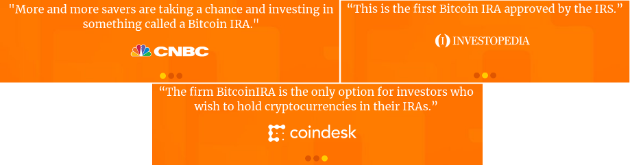
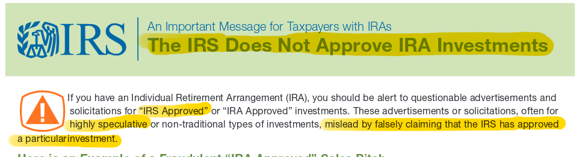
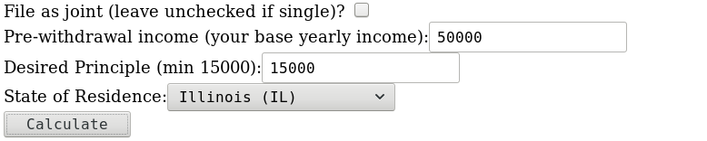
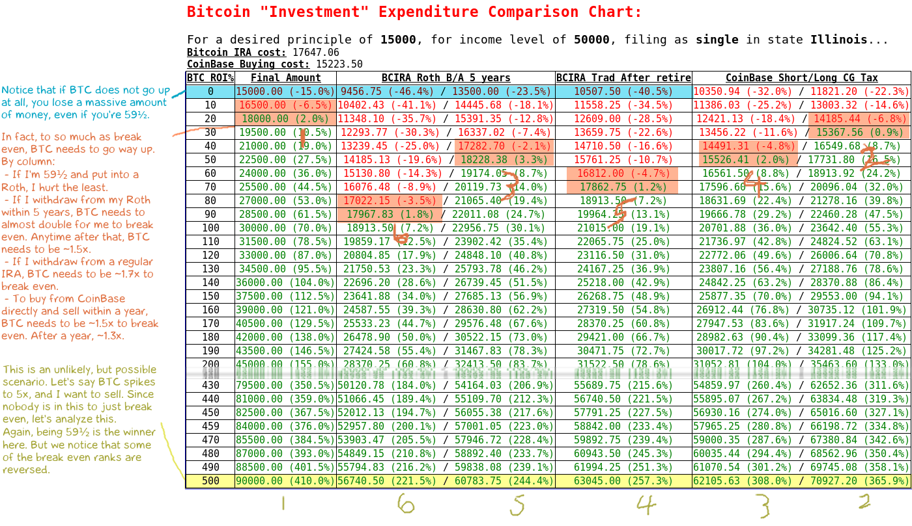
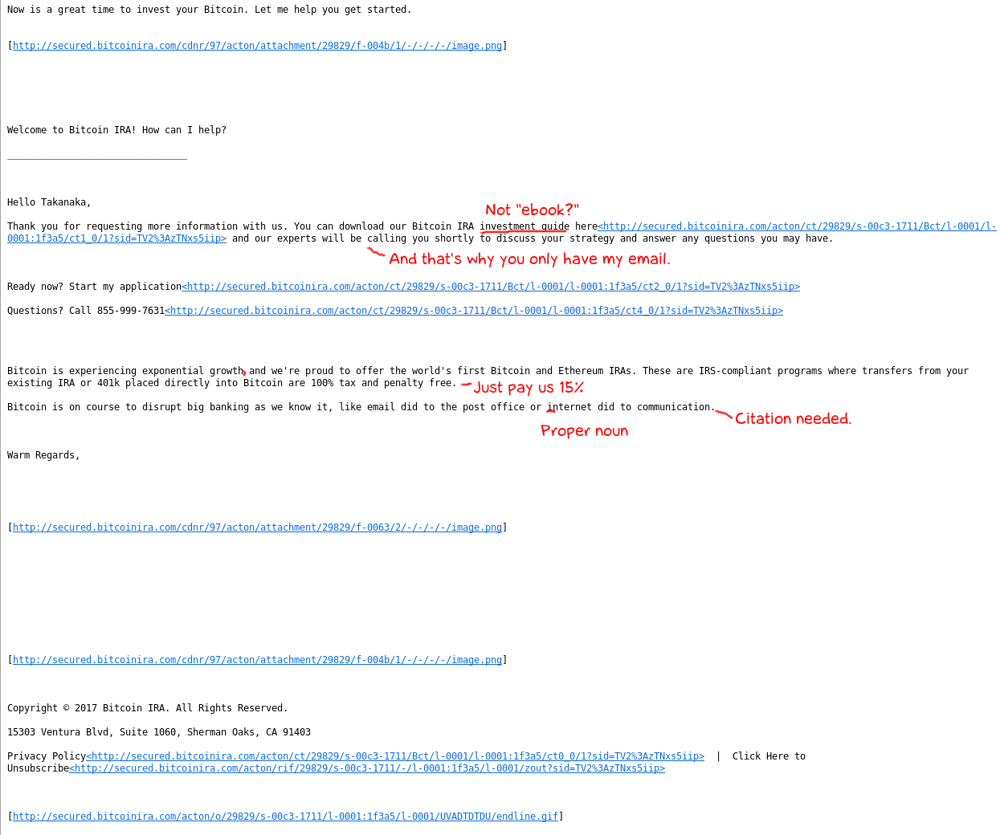
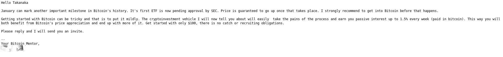
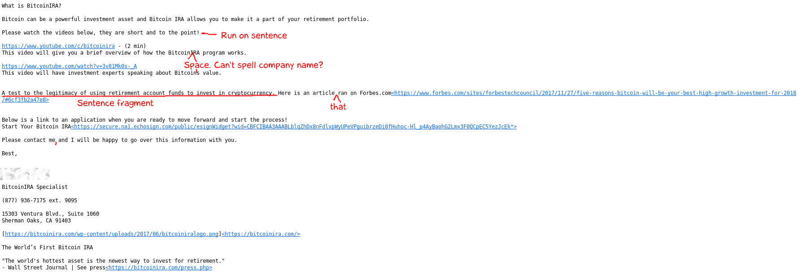
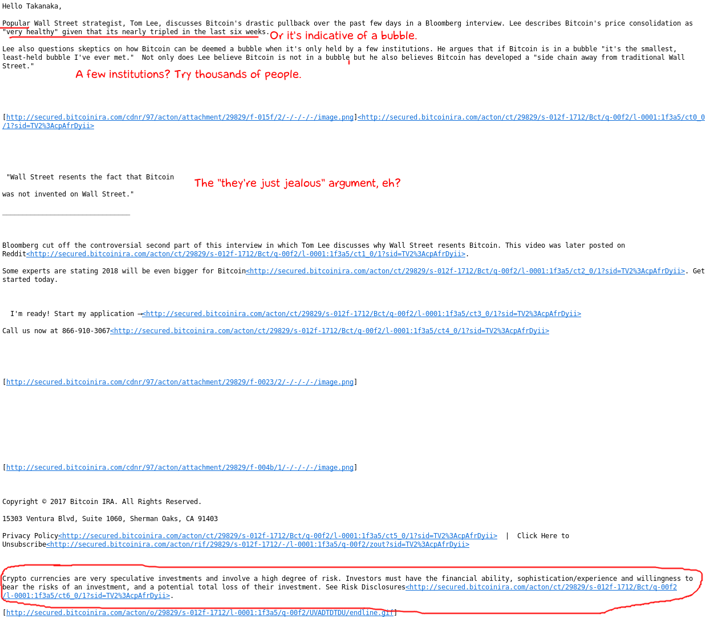
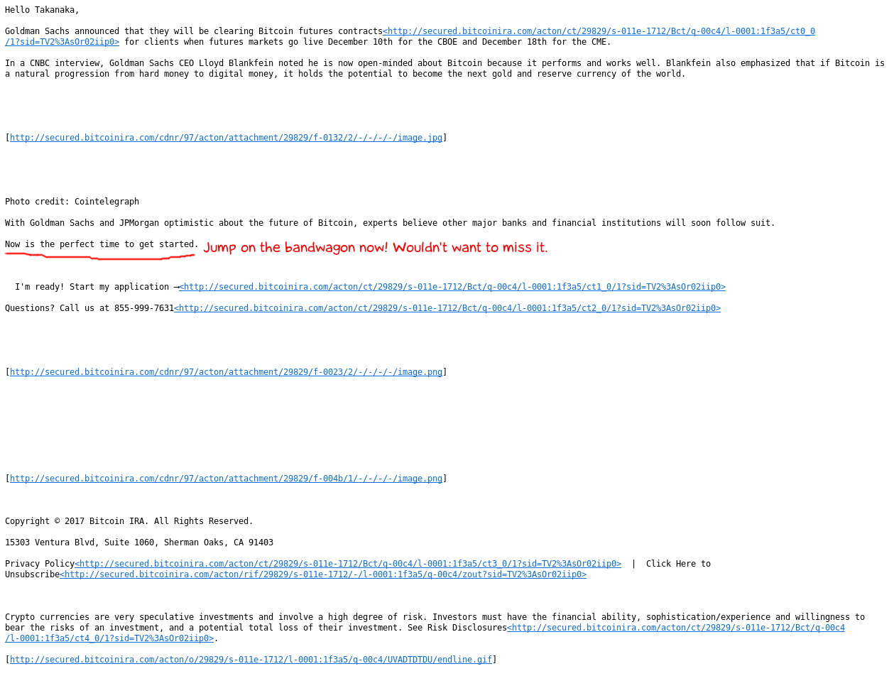
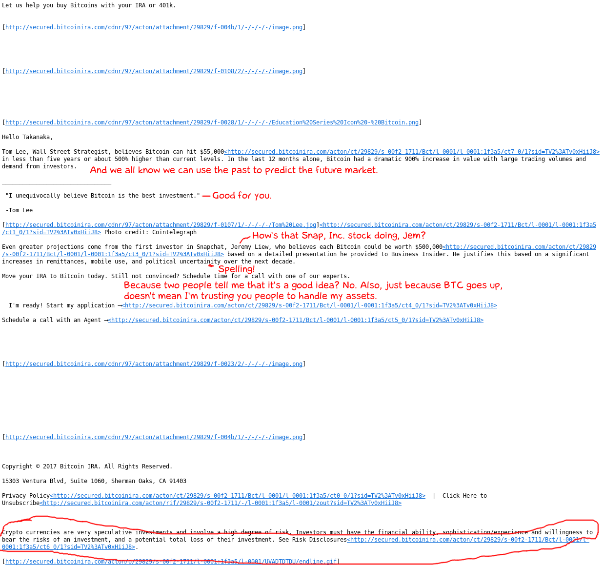

When I first heard of Bitcoin IRA, Inc, it was when I was watching Youtube on my phone. "This has to be some kind of joke," I thought, but sadly, no, it wasn't. This is a real company that wants you to pay real money to buy an extremely volatile asset with your long-term investment using their services. And they're mass-advertising it to the general public.
But first some questions for you to consider:
Let's get this out of the way first. I am a value investor (in training), which means I look for things that I think are undervalued and invest in them. Therefore, the question I have to ask myself before I buy anything is, "Do I have a good, rational reason to buy it?" As a corollary of that, "Is this thing worth more than what I am paying?"
The reason I state this is that, honestly speaking, it means that I have a bias against Bitcoin and cryptocurrency investment in itself. So I do not think Bitcoin is a good investment idea as of right now, and I do not think that Bitcoin is worth over $10K per coin. Some of that bias may come out, so if you find that upsetting, please let me direct you to this site. But for what it's worth, this project isn't about that. I will not tell you to buy or not buy Bitcoin. That decision is yours to make.
I will, however, attempt to convince you that investing using Bitcoin IRA, Inc. is a terrible decision for you if you do decide to invest in Bitcoin.
So, let's take a look at their website, http://bitcoinira.com:
At first glance, it looks professional and modern. At least they got the visuals right. They have a neat, avant-garde logo and diagram showing the Bitcoin and Ethereum logos and a dollar sign. I'm not sure what it means, though, but it looks neat, kind of like how really venomous spiders look cool.
Anyway, let's look at that blurb at the bottom there. It's really a slider with the following three messages:
These all are quite vacuous, but the one I want to call your attention to is number 2: the Investopedia quote. This is really quite a clever little trick:
The IRS published a document declaring at the very top:
I encourage you to read this for yourself.
So, really what this quote is saying is, "This is the first organization that you can buy Bitcoin directly with using your retirement funds. Yay, us. We're technically following the law with the Risks and Disclosures article."
Scrolling down a bit further, we see the following:
Yes. They are 5-star reviews. You might think that since these are actual customer reviews, that makes the company more "real" or "relatable." The problem, however, is that these people don't know what they're talking about. A large portion of these 5-star reviews are commenting on how easy it is to transfer their 401k's and IRA's over. Still others give "advice" to get in ASAP, or how Bitcoin may or, even better, will be worth a lot more in the future. And of course, the unsuspecting person would be inclined to follow suit. After all, they invested some money in, and they got very high returns back. They must have known what they were doing, right? However, let me leave you with this thought: if Bitcoin had instead lost them money, would they still think it was a good investment? Would you? An investment decision should not be judged on whether or not you have made a ridiculous amount of money, but rather by the fact that you made the best decision based on available information.
Again, not saying Bitcoin is bad. I'm just saying that an investor should always have a good reason to buy something. Otherwise, it's just gambling, and you might as well just go to a casino for a night. In the case of many, it's gambling with their futures, or worse, their children and loved ones.
By the way, BirdEye is just a combination of the Facebook and Google reviews. That third link is just padding, like on my old college resume when I thought "Manga Translator" was a good thing to put on there. Stupid old me.
Next on the page, we see this:
First of all, it's actually one of those things where you have to give them your email to get to the download. Second, it's not an ebook. It's an 11-page landscape-oriented brochure. See that book on the right? It's not real. Here's the link, so you don't have to give them your email. See for yourself. (If that link goes down, here's my copy of the file.)
Ok, but what's actually wrong with it? I've made an annotated copy of the pdf local on my repo. Keep it open and read through it when you're done reading this page.
Now I'm getting emails from their staff (which they really need to spell check). Hooray. I'll show you a few of them for your viewing pleasure at the end.
Near the bottom, I saw this article a while ago (link):
This article is crap. Yes, blockchain is becoming more widely accepted. The title, however, states that this "Hype Cycle" proves that Bitcoin is going to go up in value. Ok, look. When you prove something, you show objectively that it is true beyond any shadow of doubt. For example, you can prove that two shapes are congruent. You can prove that the Earth is not flat. You can prove that not everything that is true is provable. Applying this "Hype Cycle" here has several issues:
Ok, first, it's not that hard to buy BitCoin. Second, fine, I'll admit it offers a little more security... for Bitcoin... which they're claiming is already secure. Third, with regard to the no capital gains tax, I'll break that down next...
So if all the deceptive practices listed above are not enough to convince you, let me ask you a question: How much is 15%? Why? Because Bitcoin IRA charges the following fees when you deposit into your account:
By the way, I didn't find this on their website, and believe me, I looked for it, even under the FAQs and Risk Disclosures pages. I had to find this out through a Google search, where I found this article. In addition to this, they also charge you $100 per year just to hold your money.
To put it in perspective for you, I made this little gadget: Bitcoin Investment Comparison Charts. Play around with it for a little while. You'll come to the same conclusions I did. You can see an example run and analysis below.
Who has over 200k in an IRA anyway, or even 100k? I'm speculating a bit here. To catch a thief, one has to think like one, right? So, perhaps a better question would be, "Who would make the ideal target?" The person that comes to mind someone in his or her 40s or up, someone getting closer to retirement. Assuming you can put $5500 away at most per year into a Roth IRA, this makes some sense, as it would take about 10 years with 10%/year consistent ROI to make it to 100k. This, of course, is a more extreme estimate. For many, if not most, this will take even longer, as statistics show that most Americans in their 40s are behind the curve. This person would ideally not be very knowledgeable about cryptocurrencies especially since it is a recent technology, and preferably not investment or tech savvy. As long as the massive ROI potential is spun the right way, this person is easy prey. In other words, the deal is only sweetened for people in this target group. Now don't those discounts look ridiculous? Food for thought! Hitting a rich person once is just as effective as hitting several poor people.
Ok, now for the fun part! Oh, boy, it's data!
Let's profile me. First populate the fields:
And we get a cool table:
Analyzing this data, the evidence is clear. Since I am under 59½ by a significant margin, I will probably (over 95% sure) profit more from buying BTC from CoinBase myself if it goes up, even with capital gains taxes, short- or long-term. If I strongly believed that BTC would go up, there would be no reason for me to start the IRA, unless I also believed that BTC would go up and stay up by the time I retire, which is more than three decades from now. Fifteen percent is a killer.
Bottom line: do not give your money to this company. They either don't know what they are talking about, or they're trying to lull you into a false sense of security. Everything on the site, with the exception of the risks and disclosures page, is trying to convince you that:
If you want to invest in Bitcoin, buy it yourself. If you really want it in your IRA, I'd look into GBTC, which trades like a stock. It may have a high premium, but you also sell at a premium. You also don't have to pay brokerages like TD Ameritrade 15% of your money to buy it. That's a plus. In the future, other companies may even open similar cryptocurrency derivative trading alternatives. As if I even really need to say this again, "Don't use this service."
Here are a few of the more entertaining emails they sent to me.
The first email they sent:
From my "Bitcoin Mentor":
Editing marks added:
Here's a long one. Remember, kids, if enough important people believe something, it must be true:
Playing into the Fear of Missing Out:
Another case where they advertise Bitcoin itself, not their company:
